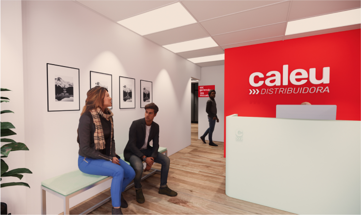
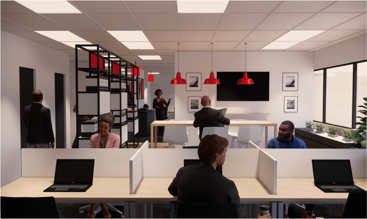
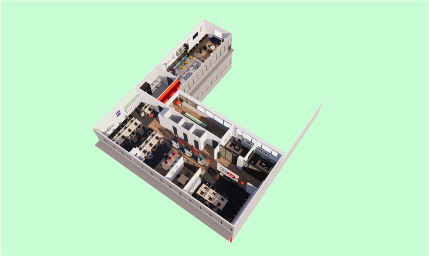
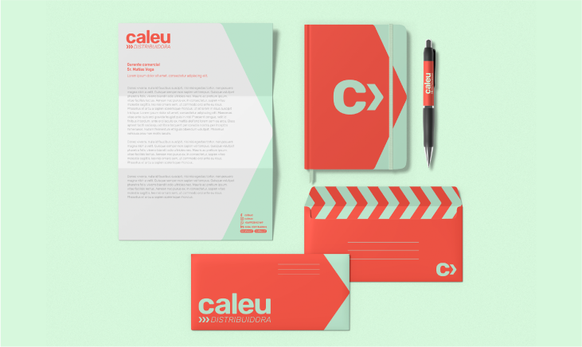
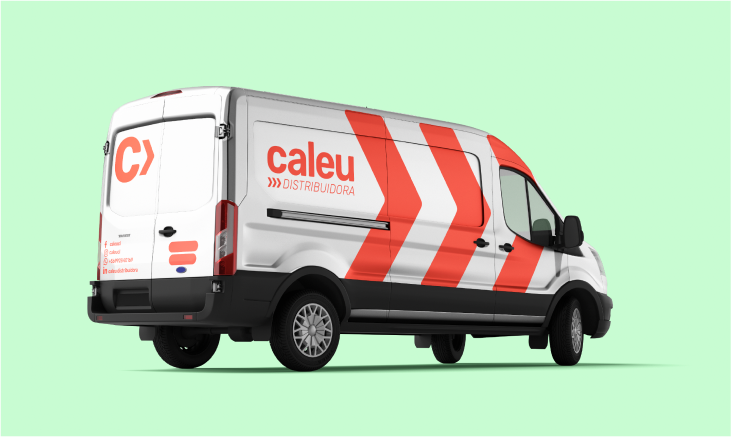
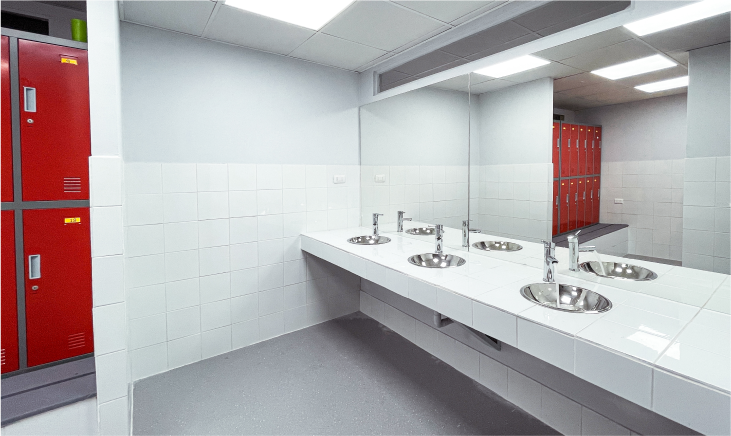
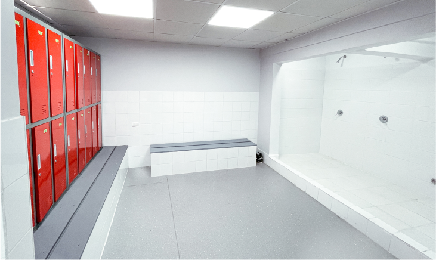

<!-- Modal 1-->
<div class="modal fade modal-xl" id="exampleModal1" tabindex="-1" aria-labelledby="exampleModalLabel" aria-hidden="true">
  <div class="modal-dialog">
    <div class="modal-content">
      <div class="modal-header">
        <button type="button" class="btn-close" data-bs-dismiss="modal" aria-label="Close"></button>
      </div>
      <div class="modal-body">

<div class=" row justify-content-center align-items-center" style="margin-bottom: 40px; margin-top: 40px;">
  <h2 class="text-center col-12 m-0 px-3 py-2" style="font-family:PPMonument; font-size: 48px; ">Caleu</h2>
  <p class="text-center text-dark fs-6 fw-light font-family-Helvetica Neue col-12 m-0 px-3 py-2">Brand Refresh and Workspace Makeover</p>
<br> <p style="padding-left: 10%; padding-right: 10%;">

  When long established cleaning product distributor Caleu approached Pink Dog with a mission to refresh and modernise their brand, they were very clear on one point: Heritage mattered.

  We began by modernising their core brand, updating key brand assets logos, fonts and colour palettes. As brand heritage was very important to Caleu we opted to keep their signature brand ‘red’, subtly updating the tone to ensure it complimented the new ‘mint green’ colour we introduced to help convey the brand eco-friendly brand value. We added a new chevron element to the brand, helping convey movement representing the product distribution side of the brand. This chevron was designed to be used alongside the ‘c’ of the brand creating a simple brandmark to be used when the longer form logo is not needed. As part of the refresh we also defined a new brand “Caleu Hogar” which is targeted at a younger and more digitally savvy audience.

  With the brand update complete we moved onto refreshing Caleu’s workspace, concentrating on their offices and distribution centre. The redesign of the workspace highlights the vibrancy of the brand, brand colours have been used to activate spaces and exposed timber has been introduced to add natural warmth to the overall space. We embraced natural light, opted for simple yet stylish furniture, and installed versatile, transparent dividers that double as a functional screen and subtly conceal bathroom areas.

</p>










      </div>
      <div class="modal-footer">

      </div>
    </div>
  </div>
</div>
<!-- Modal 1-->


